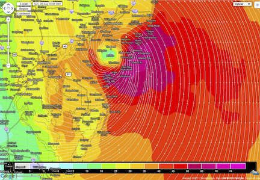
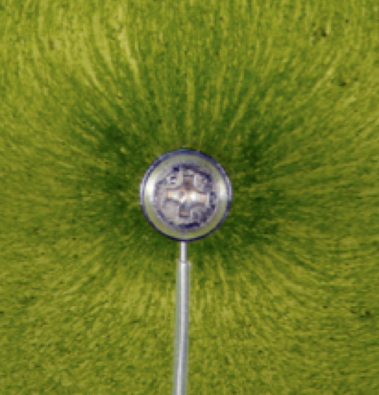
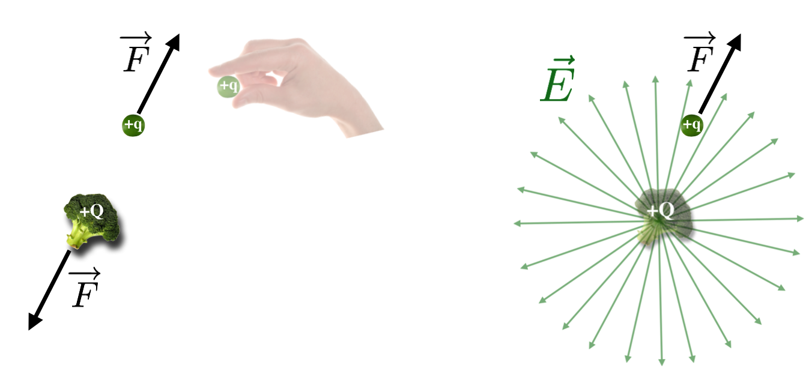

13.3. The Revolutionary Idea of a Field#
We all experience visual examples of fields…familiar to anyone who’s looked at a weather map. It’s nothing more than a distribution of some quantity in space (and time) with a value – a number—associated with every point in space. If it’s weather then any map that shows the distribution of temperature is a perfect example of a Temperature Field. You could imagine a million little weather-people all armed with thermometers and GPS transmitters who patiently take the temperature of the air in front of them and report it back continuously to Weather Central which displays it on a map. You’d expect that the values of the temperatures would be continuously varying between any two correspondents and such continuity is an important feature of a field.
13.3.1. Scalar Field#

Fig. 13.2 The figure above shows such a map. Continuity is manifest in the weather map in that the colors are not speckled like a pointillist painting, but continuous (transitions between the colors are continuous also…look at the scale at the top). Largely, the blues, greens, and yellows are connected and the colors indicate a continuous change of temperature across the country. This assures that fields can be described by smooth, mathematical functions.#
Another feature of a field, which will become important is that if you’re holding thermometers in each hand while in a swimming pool, you expect that the temperature of the right hand thermometer only depends on the actual temperature of the water in the vicinity of the right hand – not from the temperature across the pool, or down the street. Likewise, the temperature of the left hand thermometer only depends on the water near the left hand.
This is the idea of locality…that you can describe the effect by only the local conditions. In this way, the field is an intermediate carrier of some condition.
If we have a model that’s correct about whatever that condition is (heat propagation in water) we describe the cause (the distant pool heater) as creating the condition (the temperature field) which in turn, causes the effect (your thermometer reading). (The physical mechanism that creates the temperature field in this example is the direct infrared radiation from the fire. This falls on your skin can causes its molecules to vibrate. Your nerves and brain interpret this as warmth. In the example of thermometers in a pool (just below this), the molecules of the water near the thermometers are the physical mechanism. They have kinetic energy which is actually the physical measure of heat.)
13.3.2. Vector Field#
Let’s take the field idea a step further: What’s the direction of 70 degrees Fahrenheit? That’s a nonsense question, right? Temperature, like speed or mass, is called a scalar quantity, not a vector quantity. But what about the distribution of wind on a weather map, such as a hurricane? There, as is the case for all vector quantities, you care a lot about the speed – the magnitude of a hurricane’s wind velocity (which is a scalar) – and its direction (which makes it a vector). In the case of a North American hurricane, that direction is counter clockwise. So if you’re on the east coast nervously watching a hurricane just coming ashore from the Atlantic Ocean it’s probably coming at you from the northeast, (What direction is the wind if the hurricane eye has passed by you?) So wind velocity is an example of another kind of field – a vector field.


Fig. 13.3 While a complicated mathematical subject, vector fields are easy to think about if you keep the wind-velocity idea in your head. The figure above shows another weather map, this time a model for wind velocity over the NYC region during the 2011 Hurricane Irene.#
Electric and Magnetic Fields are Vector Fields with magnitudes and directions both required in order to characterize them.
How the fields change in time depends on the physics being modeled (heat? sound? mechanical vibration? electromagnetism?). A model of the particular phenomenon would consist of a set of “field equations” which would be the calculation-machinery that would lead to predictions and encompass the physics of the particular fields in question. Like any function, you supply it with a space coordinate and a time and the function will then tell you the temperature…or the wind speed and direction at that time…or the electric field strength and direction. Of course the weather person has a computer do constant evaluation over a region of space during different times and the computer has helpfully converted the evaluated function into colors.
A model of a field is a mathematical function. Sometimes the field stands for something (like kinetic energies of air molecules?). But sometimes fields are real entities themselves.
We’ll need to understand field patterns for various configurations of electric charges and currents. Just like Faraday’s magnetic field of force picture, we can do something similar for electric fields. In the spirit that a picture is worth \(10^3\) words this figure is a picture of an electrode of a positive charge – a macroscopic analog of a point electric charge like a proton. It looks alive.


Fig. 13.4 The green lines are little specks (sometimes of pollen) that are themselves influenced by electricity and align in a clearly visible pattern. The pollen specks can become differentially electrically charged and so respond to the electric field in exact analogy to little iron filings responding to a magnetic field. “Something’s there”! That was the conclusion that Faraday became convinced of for magnetic fields. Here you should have the same feeling about the “reality” of an electric field revealing itself in that green arrangement above.#
Please answer question 1 📺
13.3.3. How To Detect An Electric Field#
An electric charge needn’t be of a point or an elementary particle – indeed in Faraday and Maxwell’s time, such a notion was not even imagined. Rather their subjects were macroscopically sized objects like your finger when you’ve generated a spark from walking across the carpet -— or like the silly, charged vegetable in this figure.


Fig. 13.5 In this figure I’ve imagined a large piece of charged vegetable and Faraday’s field lines emanating outward from it just like in the figure above of the little green dielectric pieces.#
Dielectric materials
Dielectric materials do not conduct electricity but can themselves carry excess charges on their surfaces and allow their atoms to twist around in place to present all of one charge one direction and the other in the opposite direction. We say they can be “polarized.” Pollen was used in many such pictures but today we have plastics that do a better job.
We say that there’s an electric field created by the positive charge. How do I know that it’s actually there? I can’t see it or taste it or hear it.
We have to interact with a field in order to know that it’s there.
This is our first example where the measurer is an integral part of the definition of a physical phenomenon! That is, in order to “see” that an electric field is present, you must introduce another charge and watch what happens to it. That’s what’s pictured in the left-hand cartoon above.
The broccoli is sitting there minding its own business and we bring a little, tiny charge, \(+q\) and place it at that point shown. The straightforward interpretation of Coulomb’s law would say that the little \(+q\) would feel a force of repulsion
and by Newton’s rules, it would begin to accelerate away from it. Remember the mantra: if there’s an acceleration, there’s a force and if there’s an acceleration, there has to be a force.
If we carefully note the direction of \(q\)’s acceleration and its magnitude then we can declare that an otherwise invisible electric field value is non-zero at that point and is riiiight there. If the little test charge does not experience a force (and stays stationary), then either that region is field-free – or, there are multiple fields present that just happen to vectorially cancel one another at that point.
Let’s think about it in terms of the right hand figure above where we have a large positive charge, \(+Q\) and a smaller positive “test” charge \(+q\) with the presumed electric field lines drawn in. How do we know that a field is there and how do we characterize it with numbers? Well, we introduce little charges…little \(q\)’s…and we see whether they accelerate and how. You do this all of the time with your car radio and with your cell phone. The little \(q\)’s are the conduction charges (electrons) in the wire of the antennas that are built into all radios and phones. When there’s an electric field in the vicinity, these little charges feel a force and start to move and that motion is a current, which is suitably sampled and turned into Mom calling to find out where you are.
There is no alternative but to declare that:
Electric and magnetic fields are real.
Notice that Coulomb’s Law depends on both the big charge (\(+Q\)) and the little charge. And we might say that the electric field is produced by \(+Q\), but if we changed \(Q\), we would change the field. Further, if we insert the litte \(+q\) “test charge” we also change the field.
This is an unusual definition for a physical thing. We presume it’s there, but in order to be sure we have to probe it with something…in this case, little \(q\). How it responds tells us about the field. The “little” adjective for \(q\) means that we want to interpret our results as the field generated by “big” \(Q\) and not the effects of little \(q\) added in. On the one hand, we are really never observing the unadulterated field of \(Q\). But on the, um, other-other hand, charges are really, really small. I’ve avoided quantitative examples in electricity until now. Let’s see just how much charge we’re talking about here before worrying too much about our inability to perfectly measure the pristine field of a charge.
Back to our charged broccoli. It’s pretty easy to imagine a little test charge in the presence of any sort of charged object that we’d ever produce in a lab. So our need to not disturb the field is pretty easy. Maybe you’ll see this demonstration in a class – if not, ask Mr Google for a video of charging a “pith ball.” You’ll find that a charge that you can reasonably put on a little ball is about a micro-Coulomb, \(1\times 10^{-6}\) C. So if we don’t want to disturb the field around such a little object, we’d have to use a test charge of much less than this…say 0.1% of that? If so, then the amount of charge that we’d get away with using as just a test would be \(0.001 \times 1\times 10^{-6} = 1\times 10^{-9}\) C. But that’s still a lot of electrons-worth of charge so if we detected our field with, say, conduction electrons in a wire? We could indeed get away with this.
You Do It: How many electrons?
For that total charge of \(10^{-9}\) Coulombs, how many electrons would that be?
Work it out!
If this is bothering to you, don’t worry. You’re correct to be bothered and when we talk about Quantum Mechanics we’ll dig deeper for an interpretation.
But this workable metaphor suggested in the “cause-disturbance-effect” figure above with the hand pushing on the electron leads to a convenient, if not subtle definition of the Electric Field…just take out the little \(q\) from the force equation and define that to be the electric field:
entirely as due to \(Q\). This separates out the field from the probe of the field, thereby giving the field a stand-alone existence, created by the charge distribution (here, on broccoli).
Pencils out! 🖋
This works, and is kind of clever. The force depends on the product \(Qq\) so if we put in some other little charge (or even a big one), say \(p=2q\) then the magnitude of the force that \(p\) would feel is \(F_p=2F_q\):
But when I calculate the field (which is still due to \(Q\) in this narrative), I get: the same thing as when \(q\) was the guinea pig, by always dividing out the test charge amount:
The vector nature of the force means that the electric field is also a vector.
The force lines are now replaced by the Electric Field Lines as shown in the right-hand figure above. The lines get farther apart – less dense – and that’s the visual way in which we interpret the field’s strength getting weaker and weaker as we move away from \(Q\).
We define the field lines to point away from the positive \(Q\). This is a convention and coincides with the sign of the force that a positive charge would feel due to that field.
By the way the signs work out for all of the possible combinations of signs of \(\pm Q\) combined with \(\pm q\): both positive or both negative (repel, so negative force) and if different, come together (attract). That means that the direction of the electric field lines created by a negative charge is the opposite of the positive. This figure shows how to think about that for two of our more popular elementary particles, the positively charged proton and the negatively charged electron.

Remembering that Faraday had the original idea and that he did not like the idea (nobody did!) of Action at a Distance, it’s a small step from this discussion for electric fields back to the discussion of Action at a Distance from Newton’s gravitational theory. Nobody liked it! But both time and Newton’s huge reputation meant that an instantaneous influence across space for two masses was pretty much the accepted norm. Faraday’s electric lines of force were not particularly well received and it was nearly a century before people were willing to overthrow the originally distasteful Action at a Distance for something more sophisticated.
Please answer Question 2 for points 📺